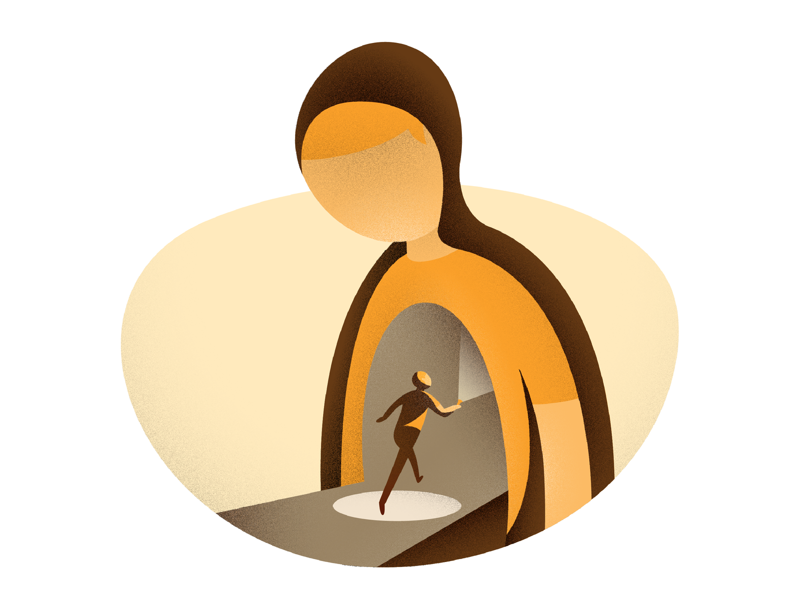
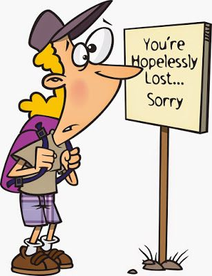

Loneliness is the Gap Between Me and Myself

Thoughts and ideas in a minimalist style
February 27, 2025
Self Exploration
"What an incredible journey,”the BBC radio host said, “and last question — we’ve been talking about loneliness on the show this morning, and you’re doing this walk alone — do you get lonely?”
The question caught me off-guard.
It was my first time speaking on the radio about my year-long walk around the coast of Great Britain for a mental health charity. I was nervous and hadn’t anticipated the question.
It was the first of many times the question would be asked of me during my circumnavigation. I knew what it meant to feel lonely, but it wasn’t caused by physical aloneness. For the most part, the last three months of walking alone gave me a deep sense of belonging.
On the radio, I fumbled my answer, saying there had been times of loneliness, but my aloneness was mostly solitude. This unremarkable answer left me unsatisfied.
Because I had spent many years feeling lonely before I set out to walk the coast, and that feeling often came from being in the company of others rather than my own.
What caused that feeling was an inability to express who I was.
Ghostly longing
My loneliness stemmed from smiling and laughing at a gathering while gripping a beer bottle like the fear around my throat.
It came from suppressing my frustrations to resolve an argument with my partner. It came from never expressing or forgoing my needs.
That ghostly longing arose when I put aside my dream of walking the Great British coastline, playing it safe in a job and a life that didn’t align with who I knew myself to be.
My loneliness felt like stepping out of myself. It had little to do with being alone but through being out of alignment.
As Carl Jung said, “Loneliness does not come from having no people about one, but from being unable to communicate the things that seem important to oneself.”
The feeling wasn’t caused by the lack of company but by the gap between who I was at that moment and my ability to express that being. Fear was all too often the cause.
Whether it came in the guise of practicality, rationality, self-loathing, rejection or failure, fear was almost always the cause of this inability to express myself.
It’s why I’m often content in my own company, where, away from external expectations and fear, I’m free to just be. As Jiddu Krishnamurti once said, “To be alone does not mean to be lonely. It means the mind is not influenced and contaminated by society.”
I was longing to be who I knew myself to be, but my authentic self was absent from my life.
